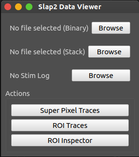
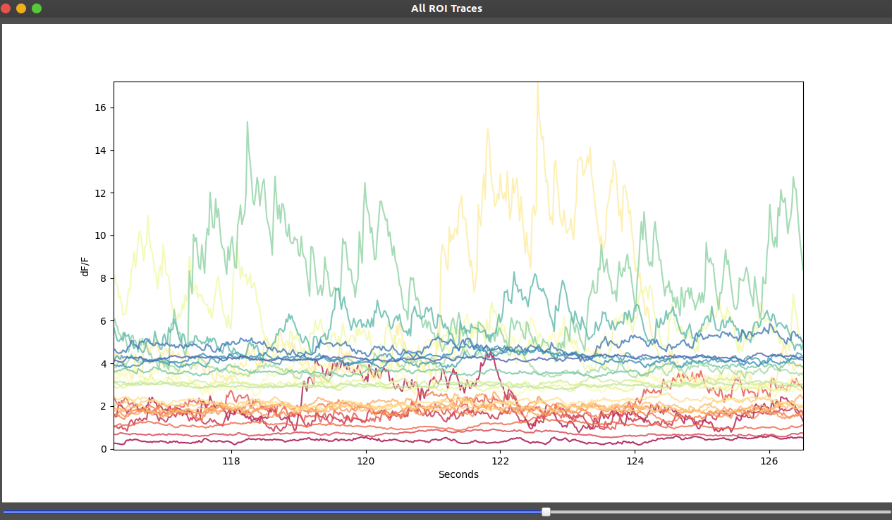
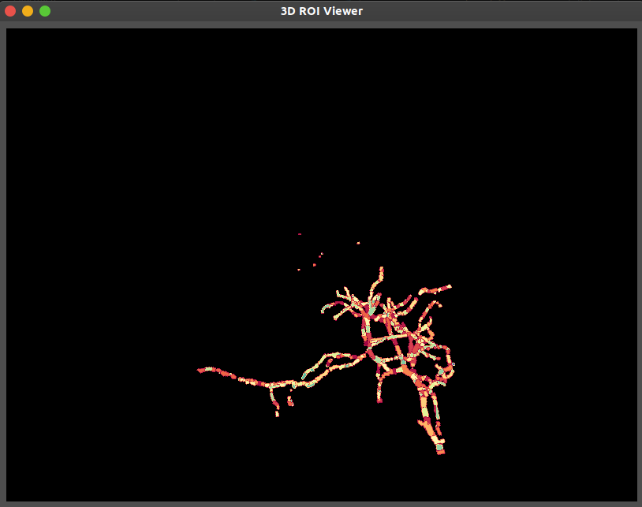

SLAP2 Viewer GUI
The pySLAP2Viewer is a graphical user interface bundled with slap2-utils that allows interactive inspection and analysis of SLAP2 .dat files and reference stacks.
Overview
The viewer is intended to streamline SLAP2 data inspection and ROI-based trace extraction. Features include:
Browse and load .dat files and their associated .meta files
Load and overlay 2D or 3D reference stacks (.tif)
View ROIs overlaid on reference images
Interactively plot calcium or voltage activity traces
Inspect ROIs in 3D
Note
CuPy is used to accelerate ΔF/F calculations during trace extraction. SLAP2 acquisitions can exceed 10 kHz sampling rates, and GPU support ensures timely computation of fluorescence signals.
Usage
Once installed via pip, the viewer can be launched from the command line:
pySLAP2Viewer
Alternatively, it can be run manually from within Python:
from slap2_utils.dataviewer.cli import main
main()
Or directly launched if the GitHub repository is cloned:
python slap2_utils/dataviewer/mainWindow.py
Required Inputs
Required:
A SLAP2 .dat file (binary data)
The associated .meta file in the same directory of the .dat file
Optional:
A 2D or 3D reference stack .tif (for ROI overlays)
A stimulus log .h5 file (for marking stimulus-aligned traces)
Main Interface
{kind=link}
This window provides access to:
File selection and metadata display
2D or 3D ROI stack overlay
ROI index selection and label display
Trace extraction and plotting area
Trace Visualization
{kind=link}
Traces are extracted using the ROI geometry stored in the metadata
ΔF/F is computed for each trace, with GPU acceleration using CuPy
3D ROI Visualization
{kind=link}
The 3D ROI viewer allows volumetric inspection of SLAP2-defined ROIs without requiring a reference stack.
Key features:
ROIs are rendered as labeled structures in 3D space
Useful for evaluating the spatial layout and depth distribution of active regions
Mouse interaction allows for zoom, pan, and rotation
Visualizes dendritic morphology and branching patterns when ROI geometry is detailed
Note
When no reference stack is provided, ROIs are visualized using only metadata coordinates. This is sufficient for spatial inspection, but anatomical alignment is not available.
Requirements
Python 3.9+
PyQt6
matplotlib
vispy
numpy
CuPy
Currently tested only on NVIDIA GPUs with CuPy using pyNeuroTrace
Reference stack must match ROI geometry